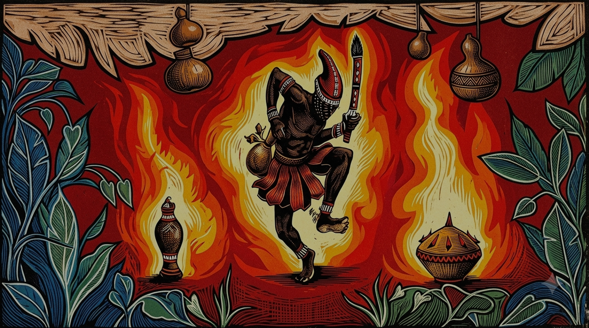

Sobre nós
1. Apresentação da entidade
A Casa Luanda é uma associação afro-cultural sem fins lucrativos, dedicada à valorização, à salvaguarda e à difusão das culturas afro-brasileiras e das culturas populares tradicionais. Com atuação em Maringá, no Paraná, constitui um espaço de referência para a formação cultural, a organização comunitária e a articulação de iniciativas e coletivos comprometidos com a diversidade cultural.
Reconhecida como Ponto de Cultura pelo Ministério da Cultura, a Casa Luanda desenvolve ações continuadas de formação, vivência, intercâmbio e produção cultural, tendo como eixos centrais o protagonismo comunitário, a valorização dos saberes tradicionais e o fortalecimento das identidades culturais.
Sua atuação está diretamente vinculada à Capoeira Angola, ao Maracatu, ao Bumba Meu Boi, ao Samba de Roda, à música, à dança e a outras expressões da cultura popular. A entidade também promove atividades educativas, encontros, oficinas, rodas, apresentações e festejos, aproximando mestres e mestras da cultura popular, artistas, educadores, jovens e comunidades.
2. Objetivos institucionais
A Casa Luanda tem como objetivos:
- Promover e valorizar as culturas tradicionais afro-brasileiras.
- Desenvolver processos continuados de formação cultural e transmissão de saberes entre gerações.
- Fortalecer grupos, coletivos, mestres e mestras da cultura popular, reconhecendo seus protagonismos e conhecimentos.
- Democratizar o acesso à cultura por meio de atividades gratuitas e ações em territórios periféricos e comunidades em situação de vulnerabilidade.
- Promover a diversidade cultural, o enfrentamento ao racismo e a valorização das identidades negras.
- Articular redes de cooperação entre organizações culturais, instituições de ensino, movimentos sociais e comunidades tradicionais.
- Desenvolver ações de acessibilidade, inclusão e participação cultural.
- Contribuir para a implementação e o fortalecimento das políticas públicas de cultura, especialmente da Política Nacional de Cultura Viva.
3. Histórico e trajetória
A Casa Luanda consolidou-se como um espaço de encontro, formação e produção cultural, reunindo grupos e iniciativas que atuam na preservação e na continuidade das culturas afro-diaspóricas. Sua organização se desenvolve a partir da gestão compartilhada e da convivência entre diferentes expressões da cultura popular.
Entre seus grupos residentes e fundadores estão o Grupo Capoeira Angola Dinda, o Maracatu Baque Mulher e o Grupo Bumba Meu Boi Anjos da Guarda. A partir dessa experiência, a Casa Luanda ampliou sua atuação, estabelecendo parcerias com coletivos, organizações culturais, instituições de ensino e movimentos sociais.
Ao longo de sua trajetória, passou a integrar e fortalecer redes de articulação cultural em âmbito municipal, estadual e nacional, contribuindo para a circulação de mestres e mestras, a formação de novos agentes culturais e a construção de espaços de participação comunitária.
Como Ponto de Cultura, a entidade compreende a cultura como direito e como instrumento de organização social, transmissão de conhecimentos e fortalecimento dos territórios. Sua atuação busca articular sem centralizar e fortalecer protagonismos das comunidades historicamente marginalizadas.
A Casa Luanda também foi declarada de Utilidade Pública Municipal pela Lei nº 11.719, de 16 de novembro de 2023.